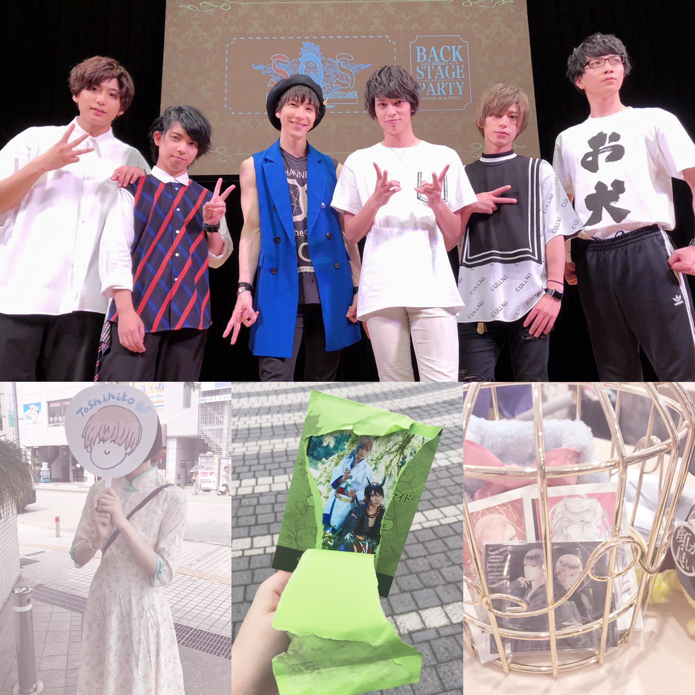
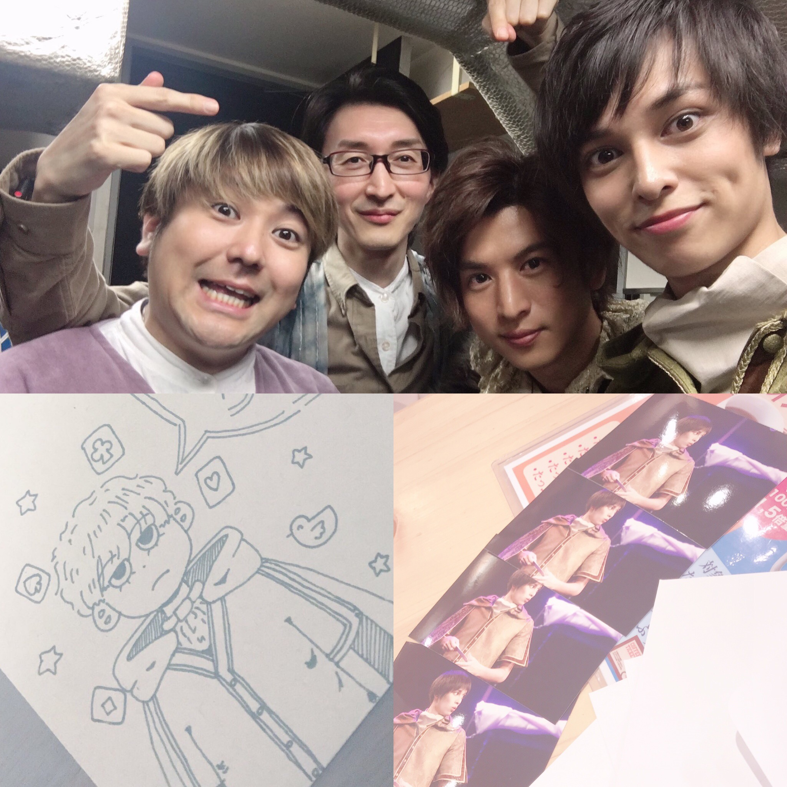
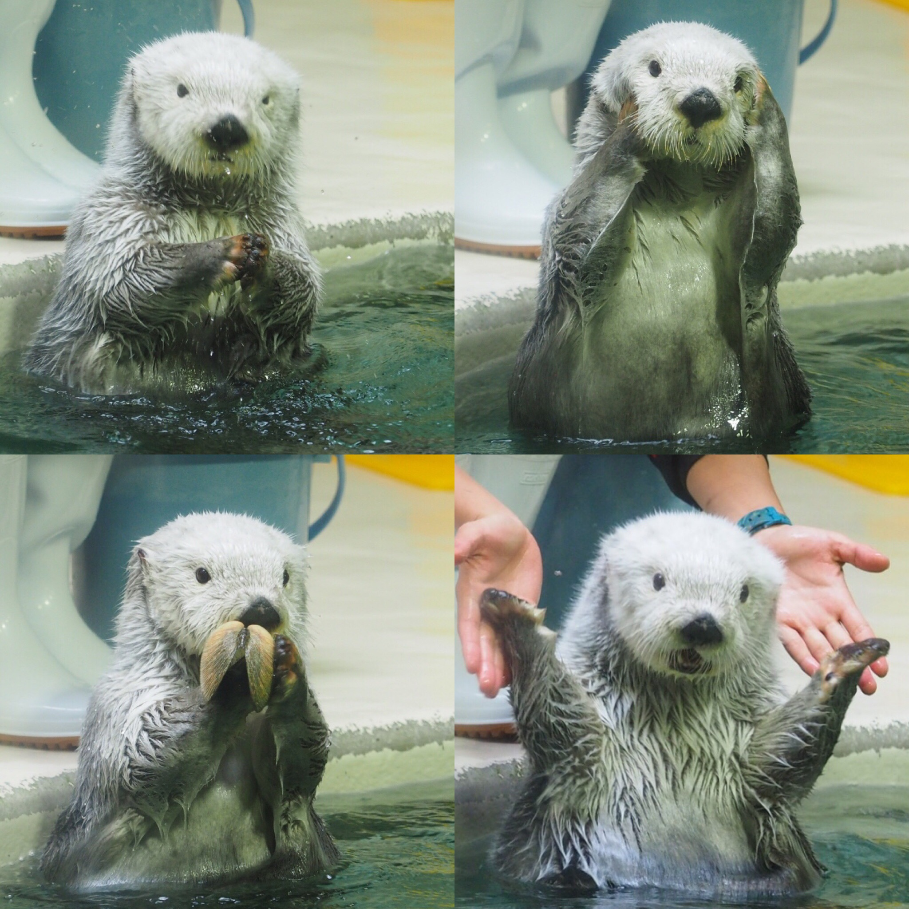
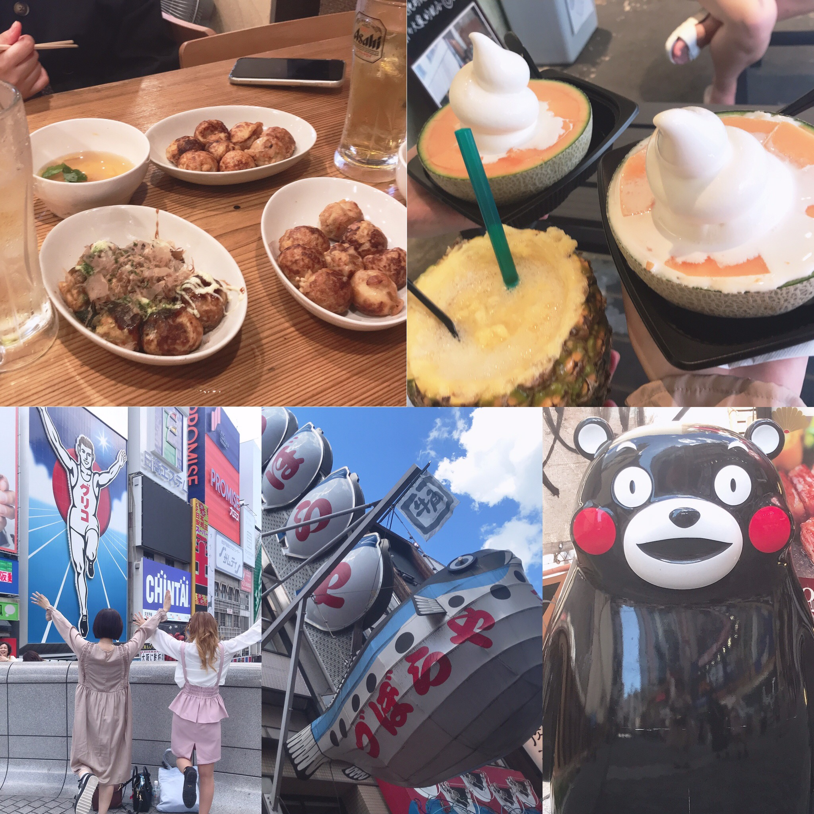

夏休みはあっという間だったのでまだ終わっていません
好きな舞台俳優さんのおっかけは夏休みになっても通常営業でした。


近畿地方に旅行しました。
三重県の鳥羽水族館に行ったのですが、ラッコが可愛すぎてラッコばっかり見ていました。
え、、本当に、、、めっちゃ可愛いんですよ。
何が可愛いか言葉で説明しようとしたのですがだめですね、語彙では到底語れないようです。（語彙力がないだけ）
この可愛さはぜひ鳥羽水族館に行って生で感じていただきたいです。

大阪で生まれた人間なのですが、初めて道頓堀に行きました。
大きい！すごい！！
